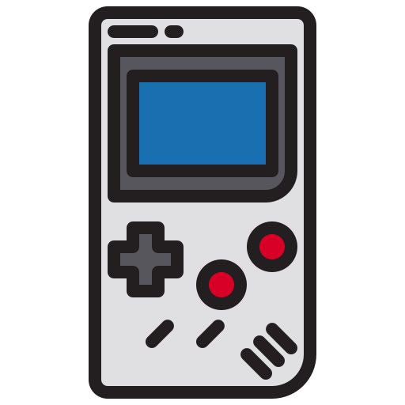
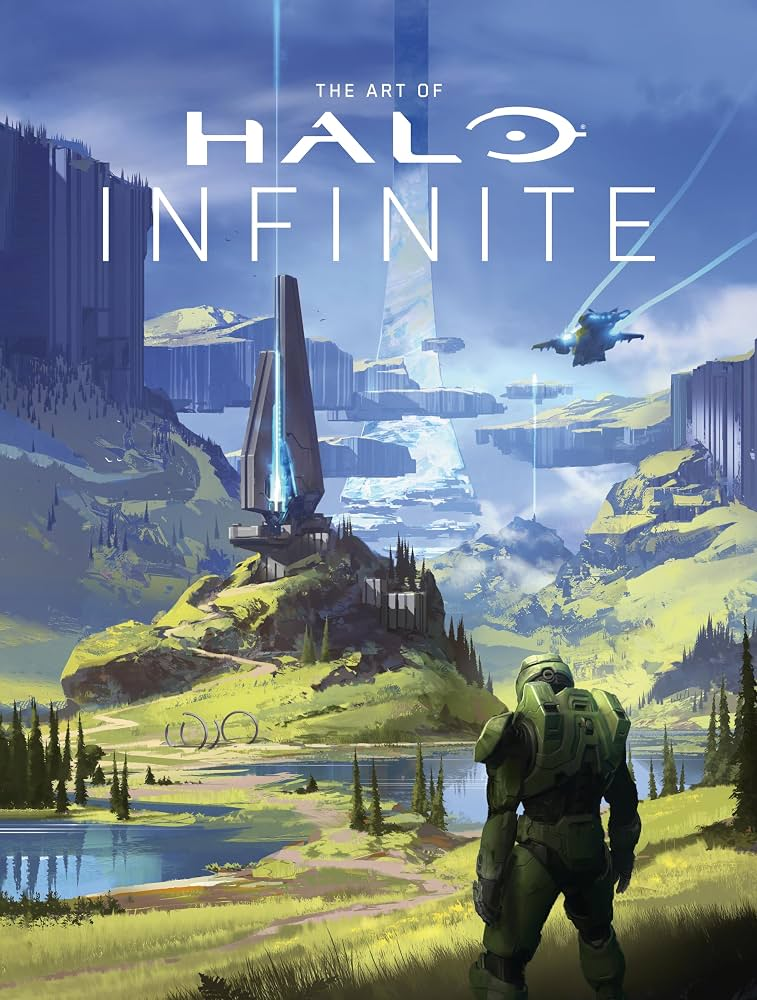
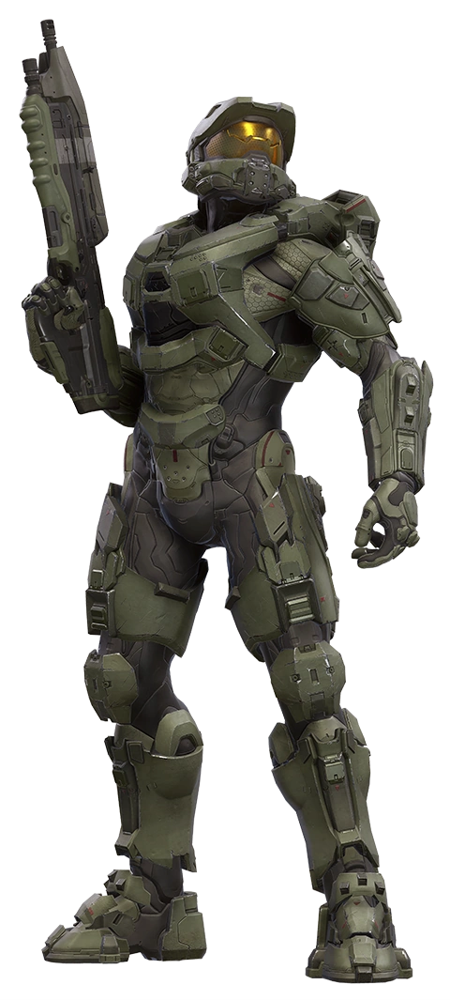
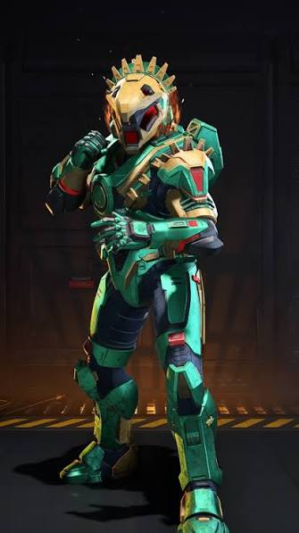
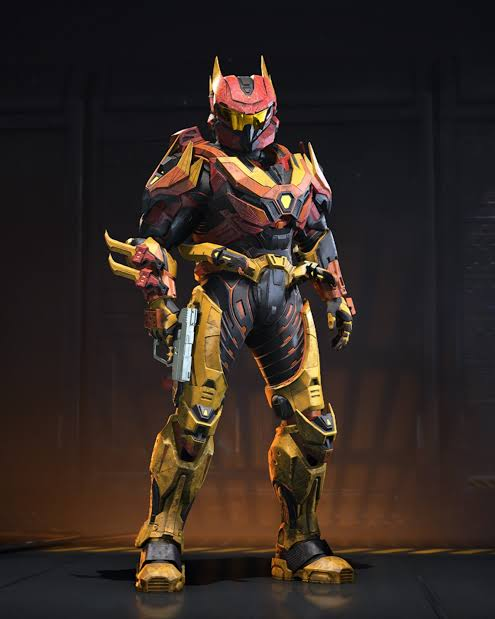

MatchmakingEn las partidas clasificatorias obtienes un nivel para cada tipo de juego y además una clasificación Spartan para una partida Matchmaking una partida Matchmaking todas las partidas Multijugador. El nivel que obtienes puede ser un número entre 1 (nivel con el que empiezas) y 50 (Máximo nivel en Matchmaking) |
 Best TeamsEquipo Azul (Blue Team) Equipo Noble (Noble Team) Equipo Gris (Gray Team) Los Surones (Ferrets) Equipo Plata (Silver Team) |
Realidad VirtualMicrosoft lanzará Halo para sus visores Windows Mixed Reality a finales de este mes. Halo Recruit estará disponible como descarga gratuita el 17 de octubre y está diseñado para ser un entorno de realidad virtual con los personajes del popular juego. 343 Industries ha creado la experiencia, que parece similar a la experiencia de realidad virtual con sables de luz disponible en HTC Vive el año pasado. No se trata de un juego completo de Halo , ni podrás controlar al Jefe Maestro, pero es un primer intento de cómo podría verse Halo en realidad virtual. Ver mas |
|---|
Halo InfiniteLa primera actualización gratuita de este año ya está disponible en Halo Infinite, junto con la nueva operación temática de Halo Wars, Spirit of Fire, un nuevo mapa, un núcleo de armadura y mucho más. La Actualización de Contenido 29 (CU29) contiene el nuevo mapa Ilusión, el legendario núcleo de armadura Mark IV, la opción de equipar cualquier hombrera en el núcleo que queramos y múltiples skins de la Halo Championship Series (HCS) y de la serie de Halo. Como parte de la Operación: Spirit of Fire, que estará activa hasta el 5 de marzo, se incluye un pase de batalla gratuito de 20 niveles que ofrece nuevos accesorios de armadura, revestimientos, amuletos para armas, emblemas, etc.
|
 |
|---|
Armaduras Spartan |
|
 Jefe Maestro 117La Armadura Potenciada de Asalto MJOLNIR (pronunciado: ˈmjɔːlnɪər, myol-neer) es un sistema de combate exoesquelético motorizado tecnológicamente avanzado, diseñado para aumentar la fuerza, velocidad, agilidad, reflejos y resistencia de un súper soldado Spartan. |
 Spatn AztecaLa armadura azteca para Halo Infinite es un conjunto cosmético inspirado en la cultura mesoamericana y los guerreros águila, lanzado el 5 de agosto de 2025 junto con la operación Shadows |
 Spartan NobleLa Armadura Potenciada de Asalto MJOLNIR/Mark V fue la quinta versión y la tercera de la Serie MJOLNIR. La armadura fue usada por los SPARTAN-IIs y algunos SPARTAN-IIIs, como los miembros del Equipo NOBLE, desde el 24 de Noviembre de 2551 y estuvo en servicio hasta Octubre de 2552, cuando fue sustituida por la Mark VI. |
|---|
Proyecto web de Humberto Vargas ParadaID24072 Pagina de inicio |